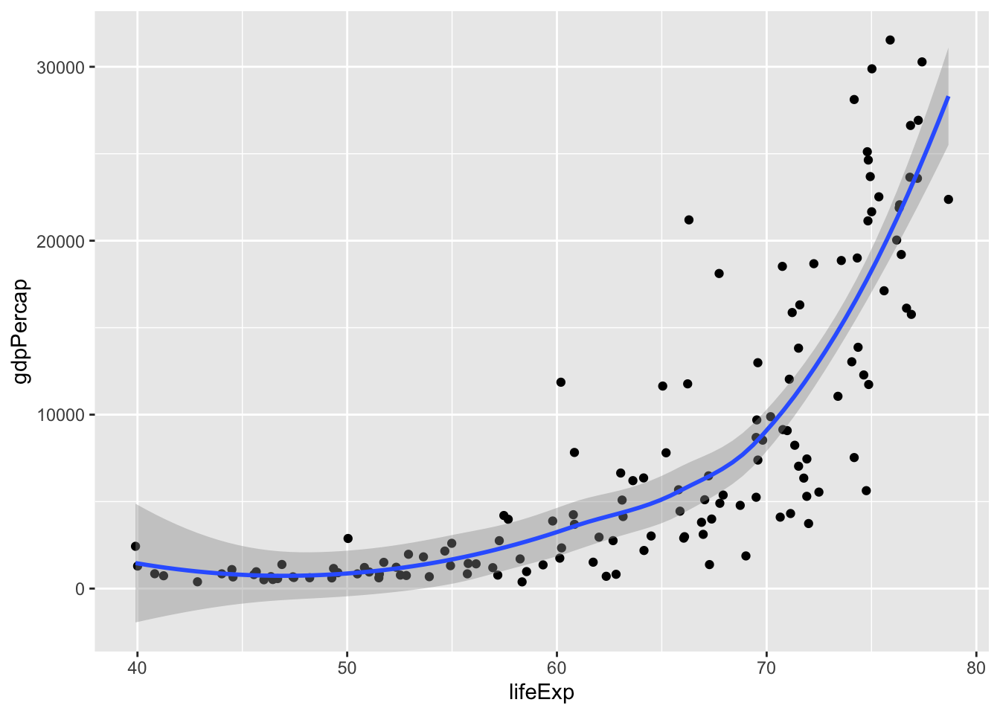
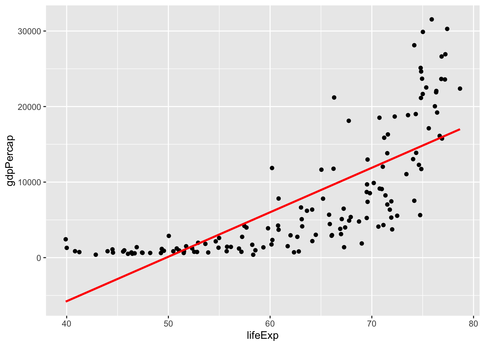
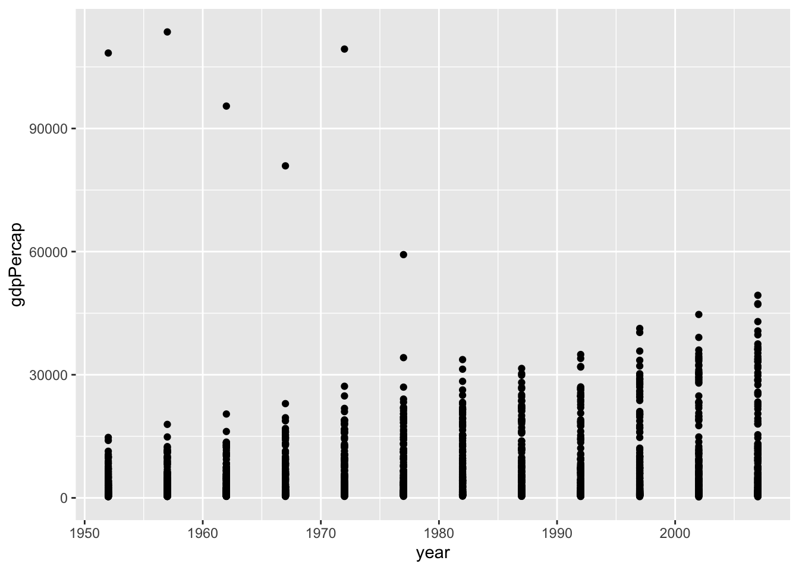
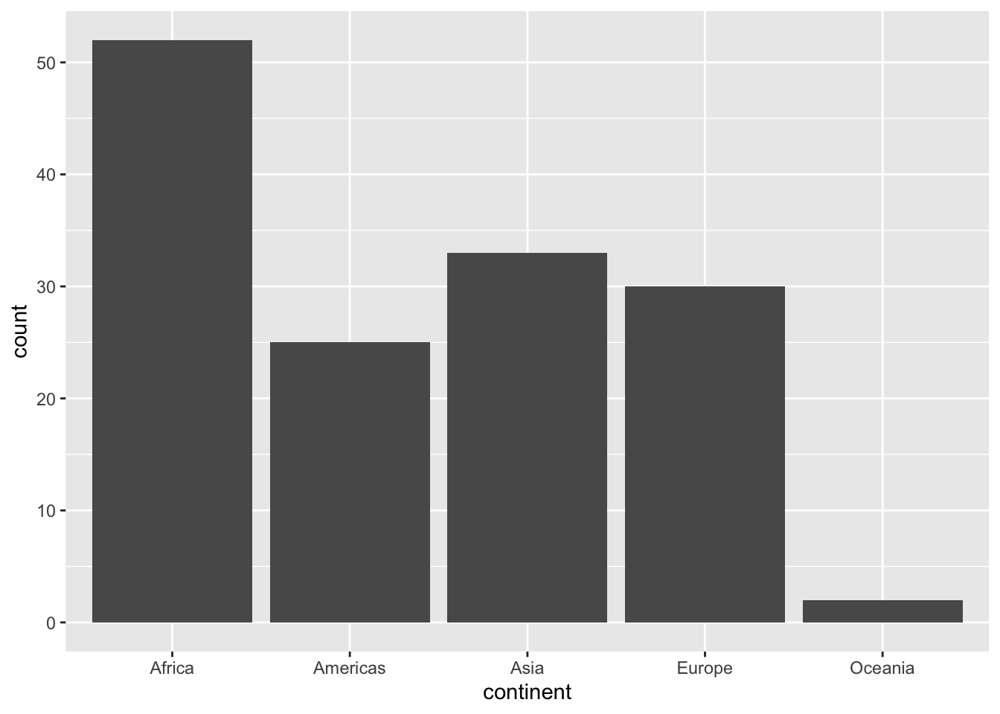
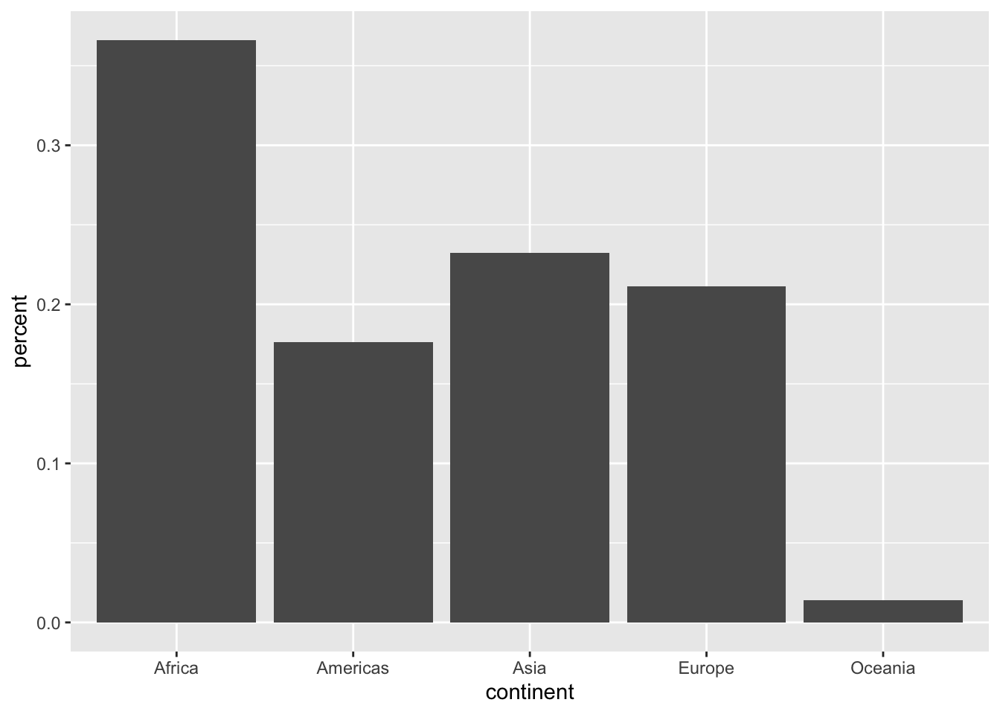

The Tidyverse is a collection of R packages created and maintained by the same group of people, largely from the same company that also created RStudio: Posit!
The Tidyverse is designed to make data science easier, more efficient, and more fun.
It is built around the idea of tidy data, which in essence just means that data is organized in a way that makes it easy to work with. In the previous section we have already heard the two core properties of tidy data:
Each column of your data is a variable
Each row of your data is an observation
From R4DS Chapter 5
And the tidyverse is created in part to make it easy to get your data in that shape and work with data in that shape. If R in general is a language, then we can think of “tidyverse” as a kind of dialect — it’s still R, but it has a specific context and use case and it is spoken by a community of people roughly doing similar kinds of data analysis.
Let’s start by loading the tidyverse meta-package.
library(tidyverse)
── Attaching core tidyverse packages ──────────────────────── tidyverse 2.0.0 ──
✔ dplyr 1.1.4 ✔ readr 2.1.5
✔ forcats 1.0.0 ✔ stringr 1.5.1
✔ ggplot2 3.5.1 ✔ tibble 3.2.1
✔ lubridate 1.9.4 ✔ tidyr 1.3.1
✔ purrr 1.0.2
── Conflicts ────────────────────────────────────────── tidyverse_conflicts() ──
✖ dplyr::filter() masks stats::filter()
✖ dplyr::lag() masks stats::lag()
ℹ Use the conflicted package (<http://conflicted.r-lib.org/>) to force all conflicts to become errors
You’ll see a lot of information there, and that’s nothing to worry about. What happened here is the following:
The tidyverse package’s main purpose is to load other packages, like dplyr, ggplot2, tidyr, … -> These are the actual tidyverse packages that provide the functionality we want!
It warns you about conflicting function names, like filter and lag. There are built-in functions in R of the same name that do very different things than they do in the tidyverse, and for the most part that is not a problem unless you try to use the function filter from the dplyr package but forgot to load dplyr beforehand!
Note that in the tidyverse, the tibble enhances the data.frame!
Tibbles are simialr to data.frames, but they look nice and avoid some potentially confusing issues.
For now we don’t need to know more, but fur future reference you should not worry when you encounter a tibble!
Tidyverse Basics: Pipes and Verbs
We start by loading the gapminder package again for its dataset, just like we did before, but now we can glimpse it rather than str it:
# A tibble: 33 × 3
country lifeExp pop
<fct> <dbl> <int>
1 Afghanistan 34.0 11537966
2 Bahrain 59.9 202182
3 Bangladesh 43.5 62821884
4 Cambodia 45.4 6960067
5 China 58.4 754550000
6 Hong Kong, China 70 3722800
7 India 47.2 506000000
8 Indonesia 46.0 109343000
9 Iran 52.5 26538000
10 Iraq 54.5 8519282
# ℹ 23 more rows
In the tidyverse, or specifically dplyr syntax, we would write it like this:
gapminder |>filter(continent =="Asia"& year ==1967) |>select(country, lifeExp, pop)
# A tibble: 33 × 3
country lifeExp pop
<fct> <dbl> <int>
1 Afghanistan 34.0 11537966
2 Bahrain 59.9 202182
3 Bangladesh 43.5 62821884
4 Cambodia 45.4 6960067
5 China 58.4 754550000
6 Hong Kong, China 70 3722800
7 India 47.2 506000000
8 Indonesia 46.0 109343000
9 Iran 52.5 26538000
10 Iraq 54.5 8519282
# ℹ 23 more rows
What happened here? Let’s dissect this one by one:
We started with the gapminder dataset, and then, via the “pipe” |>,
We used filter() to select rows using a logical expression, and then
We used select() to select specific columns (without having to quote than with "!)
This is a combination of the pipe-syntax, which passes things down to the next function, and the most common tidyverse verbs that are at the core of most data operations.
The pipe |> works everywhere in R, and x |> foo() is just a different way to write foo(x):
x <-1:10length(x)
[1] 10
x |>length()
[1] 10
This becomes really powerful once we chain many functions.
Consider a made-up example:
x |>do_the_thing() |>do_the_other_thing() |>twist_it() |>shake_it_around() |>do_a_little_dance()
Here you can read the code top to bottom, and understand the sequence of events just by following the code. Consider what this would look like without the |>:
# A tibble: 1,704 × 3
year continent country
<int> <fct> <fct>
1 1952 Asia Afghanistan
2 1952 Europe Albania
3 1952 Africa Algeria
4 1952 Africa Angola
5 1952 Americas Argentina
6 1952 Oceania Australia
7 1952 Europe Austria
8 1952 Asia Bahrain
9 1952 Asia Bangladesh
10 1952 Europe Belgium
# ℹ 1,694 more rows
Or sorting descendingly with the desc() helper function:
# A tibble: 1,704 × 3
year continent country
<int> <fct> <fct>
1 2007 Asia Afghanistan
2 2007 Europe Albania
3 2007 Africa Algeria
4 2007 Africa Angola
5 2007 Americas Argentina
6 2007 Oceania Australia
7 2007 Europe Austria
8 2007 Asia Bahrain
9 2007 Asia Bangladesh
10 2007 Europe Belgium
# ℹ 1,694 more rows
For a numeric variable like year we could also just sort by a negative of the variable:
# A tibble: 1,704 × 3
year continent country
<int> <fct> <fct>
1 2007 Asia Afghanistan
2 2007 Europe Albania
3 2007 Africa Algeria
4 2007 Africa Angola
5 2007 Americas Argentina
6 2007 Oceania Australia
7 2007 Europe Austria
8 2007 Asia Bahrain
9 2007 Asia Bangladesh
10 2007 Europe Belgium
# ℹ 1,694 more rows
But desc() has the benefit of also working for character (sorted alphabetically) or factor variables (sorted by their levels), which makes desc() applicable in more cases.
# A tibble: 1,704 × 3
year continent country
<int> <fct> <fct>
1 1952 Oceania Australia
2 1957 Oceania Australia
3 1962 Oceania Australia
4 1967 Oceania Australia
5 1972 Oceania Australia
6 1977 Oceania Australia
7 1982 Oceania Australia
8 1987 Oceania Australia
9 1992 Oceania Australia
10 1997 Oceania Australia
# ℹ 1,694 more rows
Note that in filter() you use logical expressions as we’ve seen in section 2!
You can combine multiple conditions by passing them as separate arguments with , which inside filter() is the same as using the logical AND with &:
# Explicitly using AND & to combine year and country conditionsgapminder |>filter(year ==1997& country =="Iceland")
# A tibble: 1 × 6
country continent year lifeExp pop gdpPercap
<fct> <fct> <int> <dbl> <int> <dbl>
1 Iceland Europe 1997 79.0 271192 28061.
# Identical:gapminder |>filter( year >1990, country =="Iceland" )
# A tibble: 4 × 6
country continent year lifeExp pop gdpPercap
<fct> <fct> <int> <dbl> <int> <dbl>
1 Iceland Europe 1992 78.8 259012 25144.
2 Iceland Europe 1997 79.0 271192 28061.
3 Iceland Europe 2002 80.5 288030 31163.
4 Iceland Europe 2007 81.8 301931 36181.
As a more advanced example, we can use select()-helper functions to select variables that start with a certain pattern or contain a certain word:
gapminder |>select(starts_with("c"))
# A tibble: 1,704 × 2
country continent
<fct> <fct>
1 Afghanistan Asia
2 Afghanistan Asia
3 Afghanistan Asia
4 Afghanistan Asia
5 Afghanistan Asia
6 Afghanistan Asia
7 Afghanistan Asia
8 Afghanistan Asia
9 Afghanistan Asia
10 Afghanistan Asia
# ℹ 1,694 more rows
# A tibble: 1,704 × 8
country continent year lifeExp pop gdpPercap pop_m gdpPercap_m
<fct> <fct> <int> <dbl> <int> <dbl> <dbl> <dbl>
1 Afghanistan Asia 1952 28.8 8425333 779. 8.43 0
2 Afghanistan Asia 1957 30.3 9240934 821. 9.24 0
3 Afghanistan Asia 1962 32.0 10267083 853. 10.3 0
4 Afghanistan Asia 1967 34.0 11537966 836. 11.5 0
5 Afghanistan Asia 1972 36.1 13079460 740. 13.1 0
6 Afghanistan Asia 1977 38.4 14880372 786. 14.9 0
7 Afghanistan Asia 1982 39.9 12881816 978. 12.9 0
8 Afghanistan Asia 1987 40.8 13867957 852. 13.9 0
9 Afghanistan Asia 1992 41.7 16317921 649. 16.3 0
10 Afghanistan Asia 1997 41.8 22227415 635. 22.2 0
# ℹ 1,694 more rows
Other Useful Verbs
Changing Shapes
A more advanced topic but often needed for data manipulation is reshaping your data using the tidyr package.
This might be best explained by example.
Say we want to calculate the difference in life expectancy between 1952 and 2007 for each country and continent, but using the verbs we’ve seen so far we can’t do that with a simple mutate(). We can instead use pivot_wider() which is a function that takes a “long” dataset and pivots it into a “wide” dataset:
# A tibble: 284 × 7
country continent year lifeExp pop gdpPercap pop_m
<fct> <fct> <int> <dbl> <int> <dbl> <dbl>
1 Afghanistan Asia 1952 28.8 8425333 779. 8.43
2 Albania Europe 1952 55.2 1282697 1601. 1.28
3 Algeria Africa 1952 43.1 9279525 2449. 9.28
4 Angola Africa 1952 30.0 4232095 3521. 4.23
5 Argentina Americas 1952 62.5 17876956 5911. 17.9
6 Australia Oceania 1952 69.1 8691212 10040. 8.69
7 Austria Europe 1952 66.8 6927772 6137. 6.93
8 Bahrain Asia 1952 50.9 120447 9867. 0.120
9 Bangladesh Asia 1952 37.5 46886859 684. 46.9
10 Belgium Europe 1952 68 8730405 8343. 8.73
# ℹ 274 more rows
bind_cols() combined datasets by columns, similar to base R’s cbind().
For example, here is a way to create to year-specific variables similar to the pivot_wider() example above
As far as data visualization goes, ggplot2 is probably the most popular package in the R ecosystem.
It’s an implementation of the “Grammar of graphics”, hence the gg, and it’s well known for its versatility. We can create the most common types of plots with relative ease, including
Scatterplots
Boxplots
Histograms
Barcharts (horizontal or vertical)
A ggplot is made up of layers, which are added to the plot with + and can be modified with + as well.
Think of building a ggplot as stacking layers on top of each other, and modifying the layers as you go.
Let’s start with an example of a scatterplot:
ggplot(gapminder)
This doesn’t really do anything yet – it’s the empty layer. But at least we specific a dataset.
ggplot(gapminder, mapping =aes(x = lifeExp, y = gdpPercap))
Here we used aes() to declare a mapping or aesthetics between the variables lifeExp to the x-axis and gdpPercap to the y-axis. This is the crucial step to creating a plot! But we have not decided what the geometric object is going to be, which is the geom_ part of the plot.
ggplot(gapminder, aes(x = lifeExp, y = gdpPercap)) +geom_point()
This already looks like a scatterplot!
We might want to adjust the point size, color, etc. – that’s the job of the geom!
ggplot(gapminder, aes(x = lifeExp, y = gdpPercap)) +geom_point(size =5, color ="#206b0d", alpha =0.1)
We can save the plot to a variable p and then modify it afterwards:
p <-ggplot(gapminder, aes(x = lifeExp, y = gdpPercap)) +geom_point(size =3, color ="blue", alpha =0.25)p
For example, we can try out some themes, for examples those provided by the ggthemes package:
library(ggthemes)p +theme_calc()
p +theme_economist()
p +theme_base()
p +theme_excel()
p +theme_excel_new()
p +theme_stata()
# Default theme, but with bigger textp +theme_gray(base_size =14)
Playing around with ggplot themes is usually a great way to spend an afternoon, so we’ll leave it at that for now, but you can find more info at the ggthemes website or ggplot2’s documentation at https://ggplot2.tidyverse.org.
Core geom_s
For now we will keep the colors and theming simple and focus on the most common types of plots you’ll likely want to create:
Scatterplots -> geom_point()
Boxplots -> geom_boxplot()
Histograms -> geom_histogram()
Barcharts (horizontal or vertical) -> geom_col() or geom_bar()
As a general tip, it’s often useful to use tidyverse verbs as “pre-processing” before piping data into ggplot(), that way you can focus on the plot itself after you have prepared your data to look like you need it for the type of plot you want.
Scatterplots
We have seen an example scatterplot before, but given the data at hand it’s probably more useful to focus on a specific year at a time, which is easiest to do with a filter() step beforehand
p <- gapminder |>filter(year ==1987) |>ggplot(aes(x = lifeExp, y = gdpPercap)) +geom_point()
Note
If you get confused between using |> and +, know that you are not alone!
Luckily, the error messages are informative.
A more advanced examples would be to add a linear regression line, but in this case we can already see that a linear fit is not appropriate here. We can still add a regression line though, by adding new layer:
p +geom_smooth()
`geom_smooth()` using method = 'loess' and formula = 'y ~ x'

geom_smooth() will add a general trendline, which could be a linear model or a loess curve or a GAM – if you want to explicitly add a linear trendline, use geom_smooth(method = "lm"), but beware that this is not always approriate!
p +geom_smooth(method ="lm", color ="red", se =FALSE)
`geom_smooth()` using formula = 'y ~ x'

In some cases, a scatterplot is maybe not well suited, for example if the x-variable is technically numeric but effectively categorical, like year in this case:
gapminder |>ggplot(aes(x = year, y = gdpPercap)) +geom_point()

That’s where boxplots are useful!
Boxplots
So a boxplot where each year gets its own box should be straight forward, yes?
gapminder |>ggplot(aes(x = year, y = gdpPercap)) +geom_boxplot()
Warning: Continuous x aesthetic
ℹ did you forget `aes(group = ...)`?
Unfortunately, no. Since year is technically numeric, we have two ways to deal with it and let ggplot now that year should be used as a grouping variable, and one of which the error message already suggested:
gapminder |>ggplot(aes(x = year, y = gdpPercap, group = year)) +geom_boxplot()
gapminder |>ggplot(aes(x = year, y = gdpPercap, group = year)) +geom_boxplot() +scale_y_log10()
Here group is used within aes() as a special mapping that tells ggplot that year should be used to group the data into boxplots without us needing to otherwise modify the data.
However, if we wanted, we could also recode year to be a factor variable just for this one case, which should alos get us where we need:
gapminder |>mutate(year =as.factor(year)) |>ggplot(aes(x = year, y = gdpPercap)) +geom_boxplot()
A histogram is technically a type of barchart, but since it’s so common and requires binning the data, it get’s a special place within ggplot.
p <- gapminder |>filter(year ==2007) |>ggplot(aes(x = lifeExp))p +geom_histogram(color ="black")
`stat_bin()` using `bins = 30`. Pick better value with `binwidth`.
If the defaults are not suited well, we can adjust the bins with binwidth (in this case the number of years on the x-axis) or bins to specify the number of bins in total. Another thing we’ll add is the color argument, which for a barchart changes the outline color of the bars and let’s us see the bars better. There’s also fill, which changes the fill color of the bars.
p +geom_histogram(binwidth =5, color ="black")
p +geom_histogram(binwidth =10, color ="black")
p +geom_histogram(bins =10, color ="black")
Barcharts
Sometimes people use different names vor horizontal or vertical bar charts, and confusingly enough ggplot only differentiates between “column” charts and “bar” charts, both of which can have either orientation.
Let’s settle on a simple goal: the number of observations (countries) per continent in 2007.
For practice, let’s first calculate that using dplyr verbs and use the n() helper function which just counts the number of rows (in a group):
# A tibble: 5 × 2
continent n
<fct> <int>
1 Africa 52
2 Americas 25
3 Asia 33
4 Europe 30
5 Oceania 2
But we digress – let’s get charting:
geom_bar() behaves similar to geim_histogram(), but for categorical variables. It doesn’t do any binning, and just counts the number of observations for each group defined by the variable passed to x:
p <- gapminder |>filter(year ==2007) |>ggplot(aes(x = continent)) +geom_bar()p

If we want to change orientation, it’s easy to do, but there are multiple ways!
The reason there are multiple ways to do that is because early on, only version 1 was possible, and version 2 was only made possible relatively recently.
There are many things like that in ggplot2, so please don’t be afraid to try out different ways of doing things — unless you get a warning or error message, it’s probably fine if it gets you what you want, and when in doubt there’s always good onlie documentation or tutorials.
But what about geom_col?
Well, sometimes we just want to make a barchart without ggplot doing the counting for us!
Maybe we want percentages rather than absolute numbers on the y-axis for example. That’s what geom_col() is for: It let’s us define xandy variables.
Let’s say we want the same basic plot as before, but with percentages:
gapminder |>filter(year ==2007) |>group_by(continent) |>summarize(n =n(),percent = n /n_distinct(gapminder$country) ) |>ggplot(aes(x = continent, y = percent)) +geom_col()

Note that we need to refer to the full dataset to get the total number of countries here in order to calculate the percentages, because after we have used group_by(), all operations are limited to the group we are currently working with!
So as far as the plot goes, this is technically correct, but not very nice to look at.
Let’s use this as a starting point to make our plots a little nicer!
Your turn: Customization
If we wanted to use this plot in a publication or presentation, we probably should make a few tweaks.
Let’s specify a few “wants”, together with a few hints on how to achieve them, and experiment with them!
Change the axis labels to something more human-readable
Add a title, subtitle, and caption to better describe what we’re seeing
The function color() lists all color names R knows, otherwise you can use RGB codes like #CBDFBD if you google “RGB color picker” you’ll find a lot of examples!
Reordering the continents is as easy as using reorder()!
gapminder |>filter(year ==2007) |>group_by(continent) |>summarize(n =n(),percent = n /n_distinct(gapminder$country) ) |>ggplot(aes(x =reorder(continent, desc(percent)), y = percent)) +geom_col(fill ="#63AEE1") +scale_y_continuous(breaks =seq(0, 1, by =0.1),labels = scales::label_percent() ) +labs(title ="Countries per Continent",subtitle ="Data from Gapminder",x ="Continents in Gapminder",y ="Countries per Continent",caption ="Data as of 2007" )
Advanced ggplot2
“But isn’t there an easier way?”
Yes, there is! ggplot2 is all about the building blocks, and for many common scenarios it’s cumbersome to always stack the same components on top of each other.
Luckily there are tons of R packages either extending ggplot2 or providing wrappers for common needs.
One of those wrapper packages is ggstatsplot, which you should have installed earlier in the course but which we haven’t used yet.
As the title suggest this package is primarily aimed towards statistical comparisons, but it can also be used for exploratory analyses.
library(ggstatsplot)
You can cite this package as:
Patil, I. (2021). Visualizations with statistical details: The 'ggstatsplot' approach.
Journal of Open Source Software, 6(61), 3167, doi:10.21105/joss.03167
gapminder |>filter(year ==2007) |>ggbetweenstats(x = continent, y = lifeExp,xlab ="Continent",ylab ="Life Expectancy (years)",title ="Life Expectancy by Continent (2007)" )
We can disable some of the statistical information by using bf.message = FALSE and results.subtitle = FALSE:
Recreating something like this with ggplot2 is a bit of a chore, but ggstatsplot makes it a lot easier! Here’s an incomplete attempt of recreating the above plot: